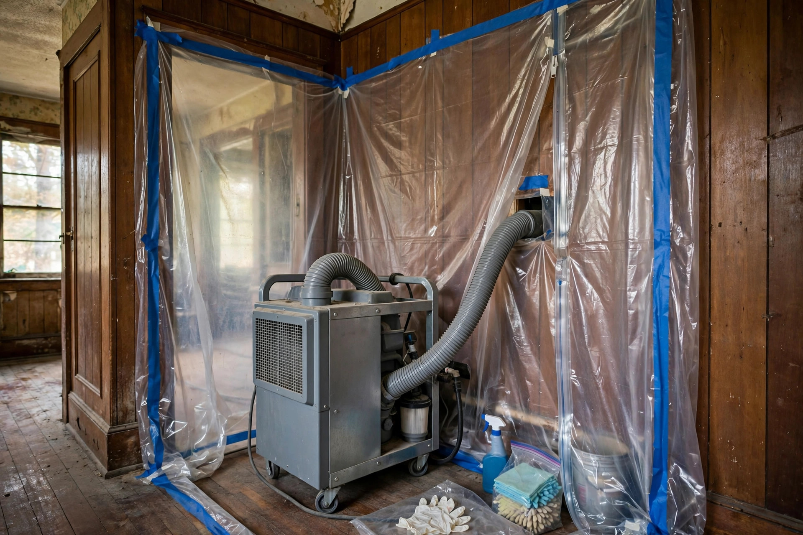

Mold Remediation That Fixes the Cause
We remove active growth, dry the structure, and address the moisture behind it — following the IICRC S520 approach used across the industry.
What affects the price
| Factor | Why it matters |
|---|---|
| Size of the affected area | A closet corner costs far less than a full basement wall. |
| Material type | Porous drywall usually gets removed; solid wood can often be cleaned. |
| Moisture source repair | Fixing a pipe or vent adds to the scope but prevents recurrence. |
| Access | Tight crawl spaces take more labor than open basements. |
Growth you can see — or smell?
Call now and we will take a look, explain your options, and give you a straight price.
Open 24 hours · Serving Caldwell and Canyon County
Before we start, we confirm
- The moisture source is identified, not just the visible growth
- Containment will protect the rest of your home
- You have a written scope with a clear price before work begins
- Drying targets are set and will be verified with meters
A homeowner on the older east side finds black staining behind a washing machine. A corroded galvanized supply line has been seeping for months. Remediation means removing the affected drywall section, replacing the line, drying the cavity, and rebuilding — addressing the pipe, not just the stain.
Sources: EPA — Mold, Moisture & Your Home · CDC — Mold
Straight talk on cost
Affordable does not mean cut corners. It means a clear scope, no surprise add-ons, and work sized to what your home actually needs.
Questions, answered plainly
What does mold remediation cost in Caldwell?
It depends on how far the growth has spread and what materials are affected. Small contained areas cost far less than whole-basement jobs. After an inspection we give a clear written scope before any work starts.
Do I have to leave my house during remediation?
Usually not. Containment barriers with negative air keep the work area sealed off from the rest of the home, so daily life can continue in unaffected rooms.
Will the mold come back?
It should not, provided the moisture source is fixed. That is why every job includes finding and addressing the water issue — a leaking pipe, poor drainage, or missing ventilation — not just removing what you can see.
Can I just bleach it myself?
Bleach can lighten surface staining on hard, non-porous materials, but it does not reach growth inside drywall or wood, and it does nothing about the moisture feeding it. The EPA notes that the key step is fixing the water problem first.
How do you handle older plaster walls?
Caldwell has many homes with original plaster. We assess whether affected plaster can be cleaned and sealed or needs partial removal, and we explain the trade-offs before deciding.
How the work proceeds
Every job follows the same careful sequence — no shortcuts.
Contain
Poly barriers and negative air seal the work area so spores do not spread through the house.
Remove
Affected drywall, insulation, or other porous materials come out. HEPA vacuums capture what wiping misses.
Dry
Air movers and dehumidifiers bring framing and cavities down to safe moisture levels, verified with meters.
Verify
A final check confirms the area is clean and dry before anything gets closed back up.

Signs it is time to call
Not every stain needs full remediation — but these signs mean it is worth a professional look.
- A musty odor that returns after cleaning
- Staining that spreads or darkens over weeks
- Growth larger than a dinner plate (the CDC suggests professional assessment at that scale)
- Health symptoms that ease when you leave the house
- Visible growth after any plumbing leak or flooding